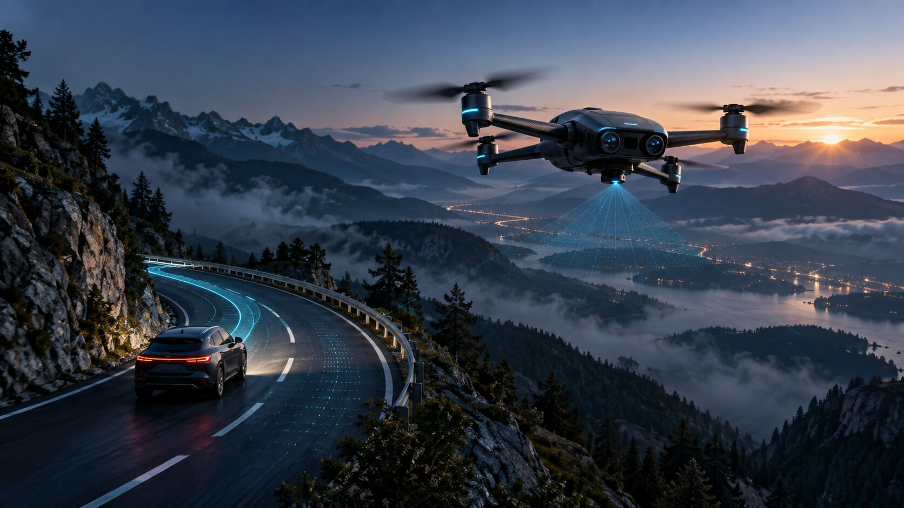

See beyond occlusion
Observe stopped traffic, debris, flooding and blind approaches from an elevated viewpoint.

SMART NAVIGATION DRONE PROTOTYPE
SkySense explores how an autonomous aerial scout can perceive the road beyond a vehicle's line of sight—and turn that view into useful, safety-gated navigation context.
SkySense is a research prototype for cooperative perception: a drone maps local terrain, detects hazards and shares verified observations with a smart vehicle. The vehicle remains the decision authority.
The first objective is not autonomous driving. It is a dependable aerial sensing layer that can improve situational awareness during low-speed, controlled demonstrations.
Observe stopped traffic, debris, flooding and blind approaches from an elevated viewpoint.
Run perception and local planning on the aircraft for low latency and graceful loss of connectivity.
Send confidence-scored events through a safety gateway; the car validates before any response.
MODULAR BY DESIGN
Two compute domains keep hard real-time flight separate from high-level AI. Select a layer to inspect its responsibility.
SENSOR PLANE
A synchronized RGB/stereo pair supplies texture and depth; LiDAR or solid-state depth provides geometric redundancy; GNSS/RTK, barometer and IMU anchor every observation in time and space.
ONBOARD PERCEPTION
Models are chosen for deterministic edge inference and measurable confidence—not novelty alone.
OBJECT DETECTION + TRACKING
Fine-tuned real-time detection identifies vehicles, people, cones, debris and animals. Multi-object tracking reduces duplicate alerts and estimates motion.
DEPTH + VIO
Stereo depth and visual-inertial odometry estimate free space and motion when GNSS is degraded.
OpenCV · VIO/SLAM · ROS 2 transformsSEMANTIC SEGMENTATION
Pixel-level road, shoulder, water and terrain labels complement object boxes and enable safer route context.
TensorRT · confidence masks · temporal smoothingCHANGE + ANOMALY
Map-to-live comparison highlights new obstacles while uncertainty logic suppresses weak or stale observations.
Local map cache · novelty score · human reviewCOOPERATIVE, NOT COUPLED
SkySense shares bounded observations through a gateway. It does not write directly to steering, braking or propulsion networks.
Begin with a dashboard visualization or Autoware simulation. No direct actuation during early prototypes.
If link quality, timestamps or confidence fall outside limits, discard the aerial event and preserve normal vehicle operation.
Mutual authentication, signed messages, least-privilege topics and a segmented gateway protect vehicle networks.
PROPOSED COMPONENTS
A practical starting stack for a research prototype; final parts depend on payload, endurance and test requirements.
BUILD EVIDENCE IN LAYERS
Each gate must pass measurable safety and performance criteria before the next one begins.
PX4 + Gazebo missions, sensor fault injection and deterministic log replay.
Measure precision, recall, localization error, latency and failure cases across weather and lighting.
Validate geofence, loss-link, return/land, obstacle clearance and human override.
Fuse signed aerial events in CARLA/Autoware, then a low-speed test vehicle with safety driver.
*Engineering targets for prototype planning, not achieved or certified performance claims.
PRIMARY REFERENCES